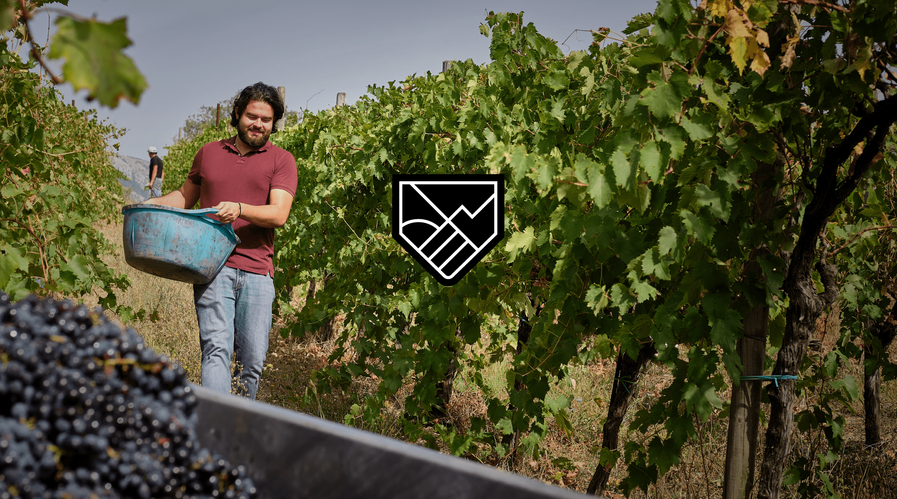
TERRE MASSESI
Famiglia Di Leone
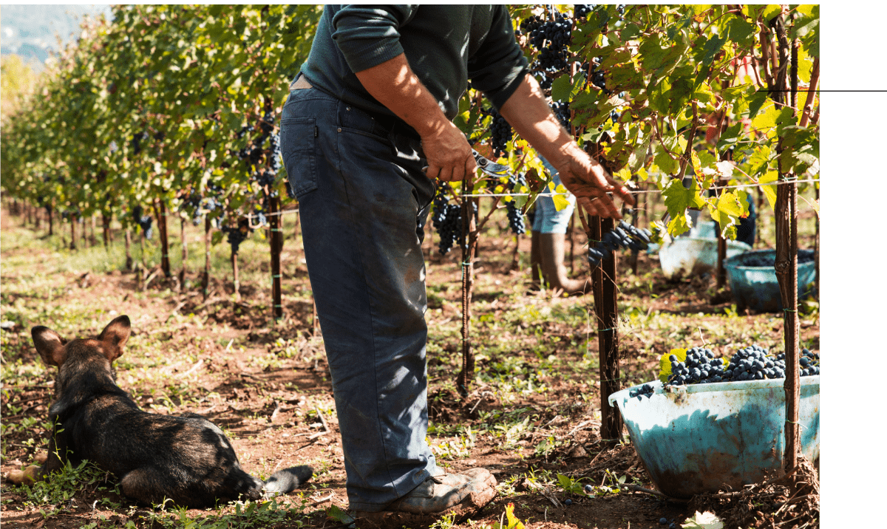
YESTERDAY. TODAY. ALWAYS.
From grandparents to fathers.
From fathers to sons.
We were born in the shade of the vines, in the heart of Sannio, surrounded
by sunny valleys and protected by Monte Acero.
Wine flows within us, it has been part of us for three generations,
even before we tasted our first sip.
The legacy we have is a star that guides us,
a story that writes our destiny,
a dream that inspires us.
From us to our children.
From our children to our grandchildren.
WINE IS
AN EXPERIENCE
TO LIVE AND
SHARE
FAMILY VINES
One midsummer day we immersed ourselves in the vineyards, bringing with us everything that our family has passed down to us over the years.
Alessio, Davide, Giovanni
Brothers, cousins, and guardians of the history of the Di Leone family. Together we brought to life Terre Massesi, the third-generation winery of the Di Leone family.
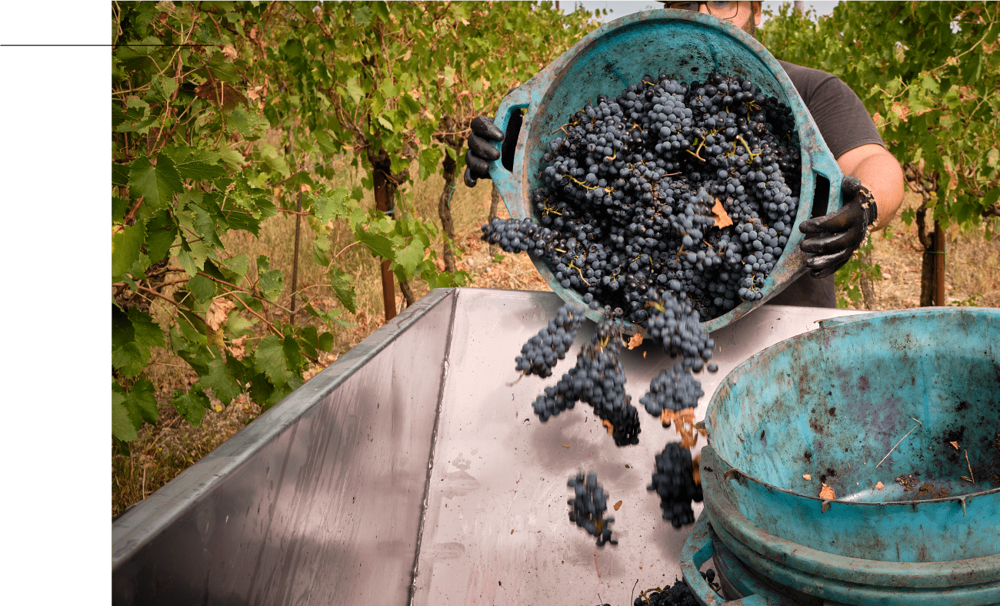
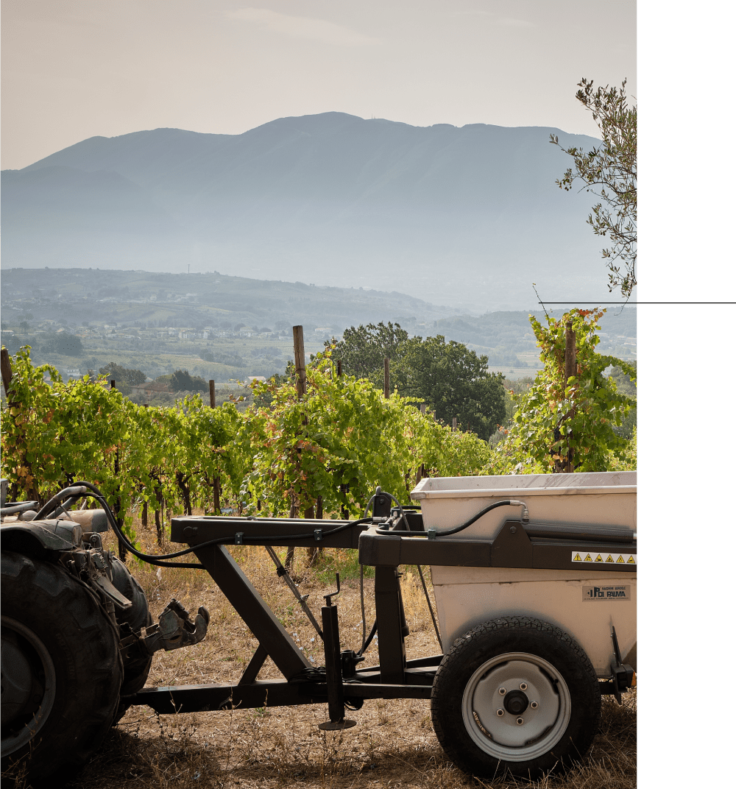
The name is a tribute to our origins and reflects the deep and authentic bond we have with the territory that has seen us born, grow, and fall in love with the wine culture. Our vineyards extend between sun-kissed mountains and valleys caressed by the wind. And we take care of them every day with commitment, love, and dedication. We work to preserve the authenticity of Sannio wines: guardians of the wealth of Massa, where every bunch tells the story of our roots and the winemaking art passed down through generations. THE TERRITORY
WINE AS AN AUTHENTIC EXPRESSION OF OUR VALUES
FARMING TRADITION
Every row, every bunch, every bottle is the expression of ancient knowledge and flavors that belong to our peasant heritage.
PATIENCE
We respect the rhythm of nature and patiently await its most bountiful fruits. The vineyard is our teacher, showing us the value of time and care.
FAMILY
Our wine is the essence of the Di Leone family, which for generations has passed down the indissoluble bond with the land and the constant commitment to oenological excellence.
AUTHENTICITY
Every sip of our wines tells a sincere story,
rooted in the heart of our land.
An ode to the authenticity and purity of our roots.
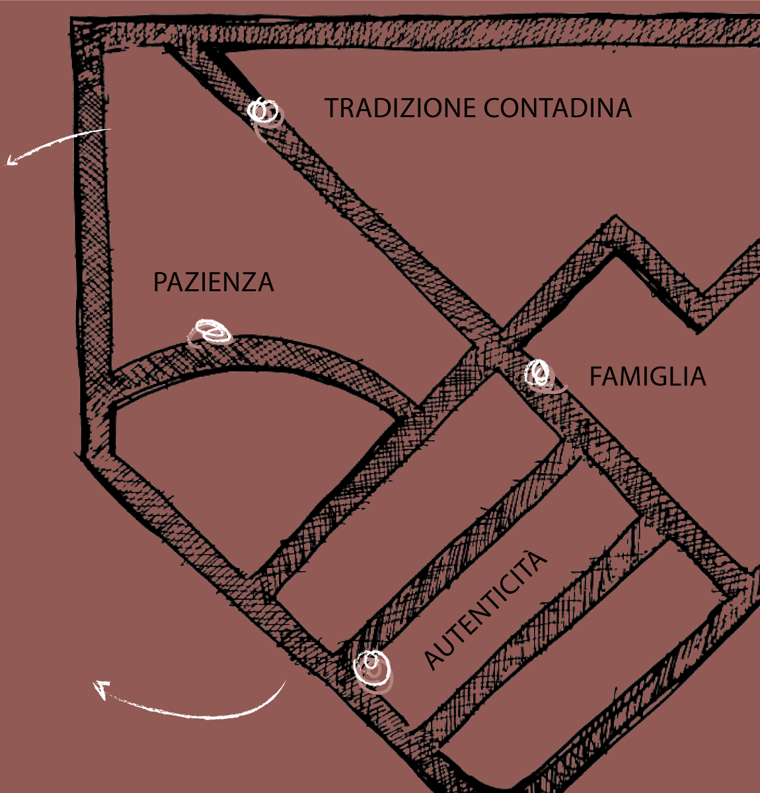
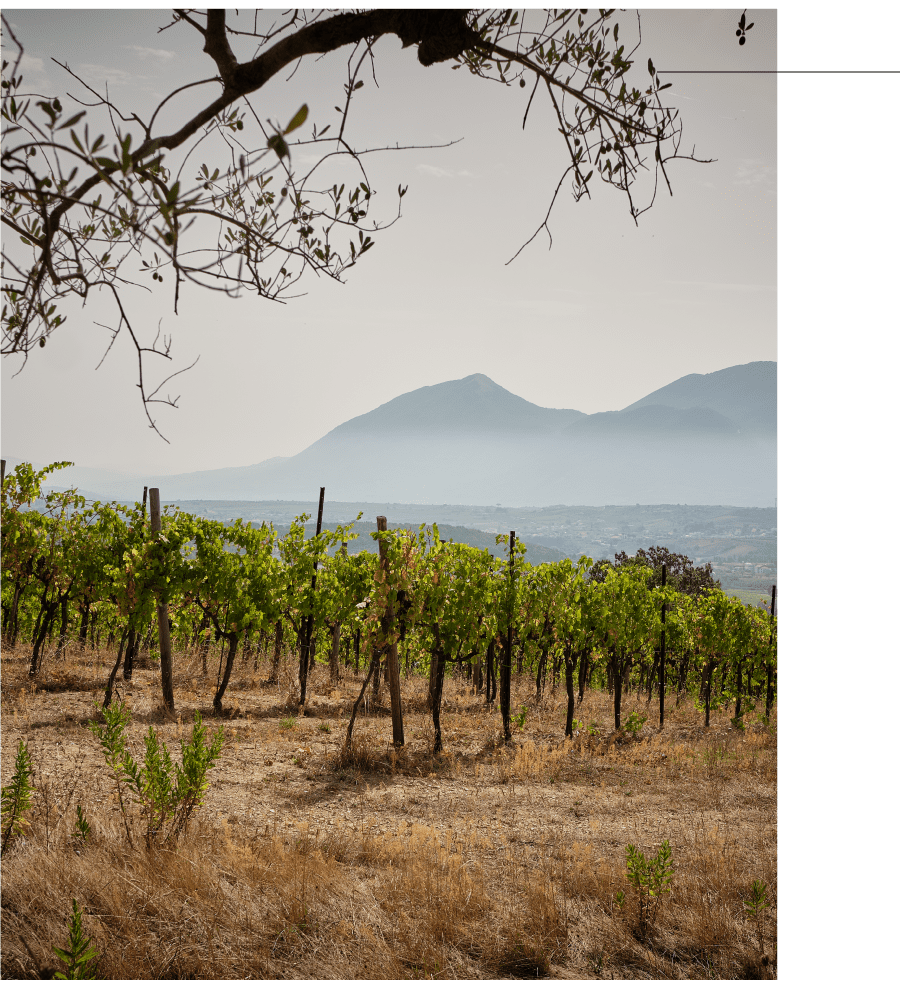
OUR HOME IS SANNIO
WHERE TIME SEEMS
TO STAND STILL AND BIODIVERSITY
REIGNS SUPREME.
IN THE HEART OF THIS GENEROUS
LAND, THE VINEYARDS GROW
STRONG AND VITAL AND BIRTH
WINES RICH IN HISTORY AND
TRADITION.
VITE IN BOTTIGLIA
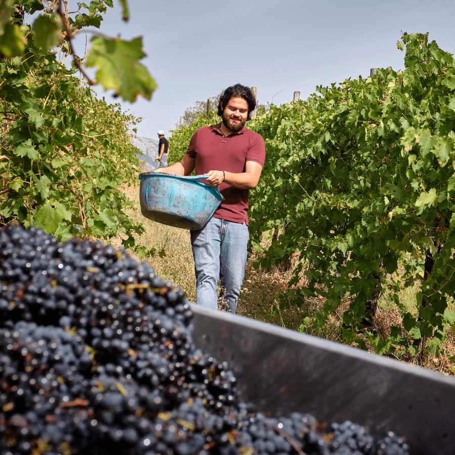
TERRE MASSESI
Famiglia Di Leone
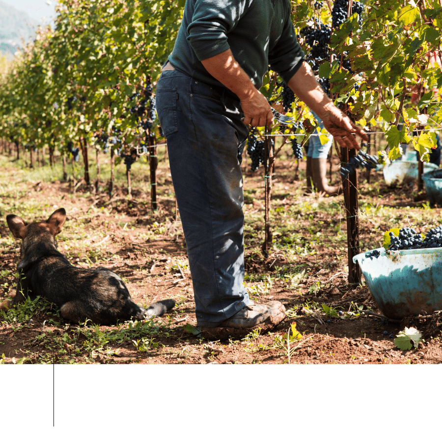
Tastes of authenticity
YESTERDAY. TODAY. ALWAYS.
From grandparents to fathers.
From fathers to sons.
We were born in the shade of the vines, in the heart of Sannio, surrounded
by sunny valleys and protected by Monte Acero.
Wine flows within us, it has been part of us for three generations,
even before we tasted our first sip.
The legacy we have is a star that guides us,
a story that writes our destiny,
a dream that inspires us.
From us to our children.
From our children to our grandchildren.
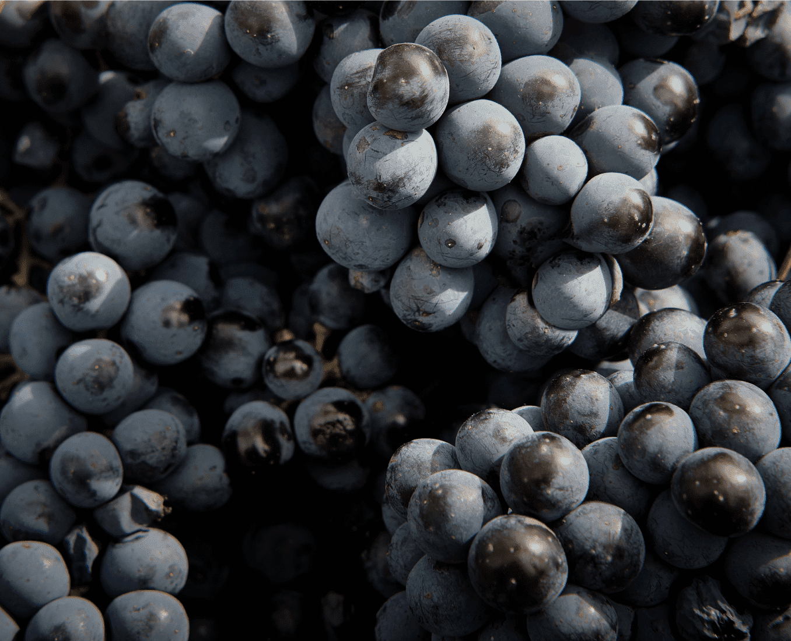
FAMILY VINES
One midsummer day we immersed ourselves in the vineyards, bringing with us everything that our family has passed down to us over the years.
Alessio, Davide, Giovanni
Brothers, cousins, and guardians of the history of the Di Leone family. Together we brought to life Terre Massesi, the third-generation winery of the Di Leone family.
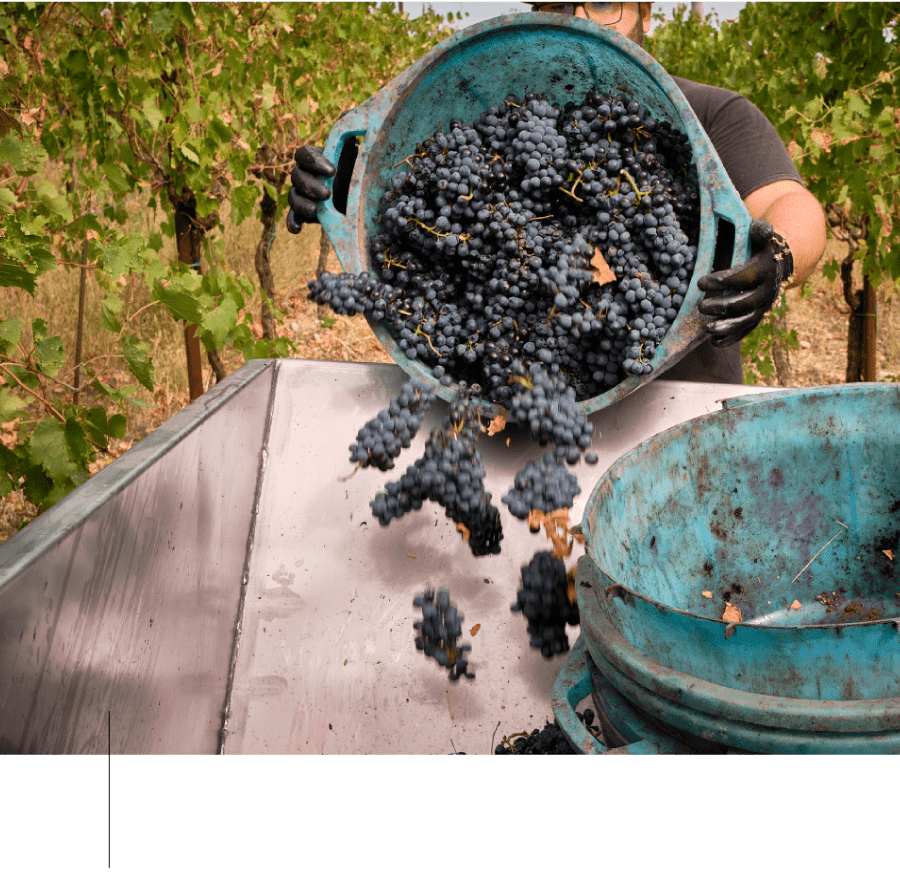
The name is a tribute to our origins and reflects the deep and authentic bond we have with the
territory
that has seen us born, grow, and fall in love with the wine culture.
Our vineyards extend between sun-kissed mountains and valleys caressed by the wind.
And we take care of them every day with commitment, love, and dedication.
We work to preserve the authenticity of Sannio wines: guardians of the wealth of Massa,
where every bunch tells the story of our roots and the winemaking art passed down through
generations.
THE TERRITORY
WINE AS AN AUTHENTIC EXPRESSION OF OUR VALUES
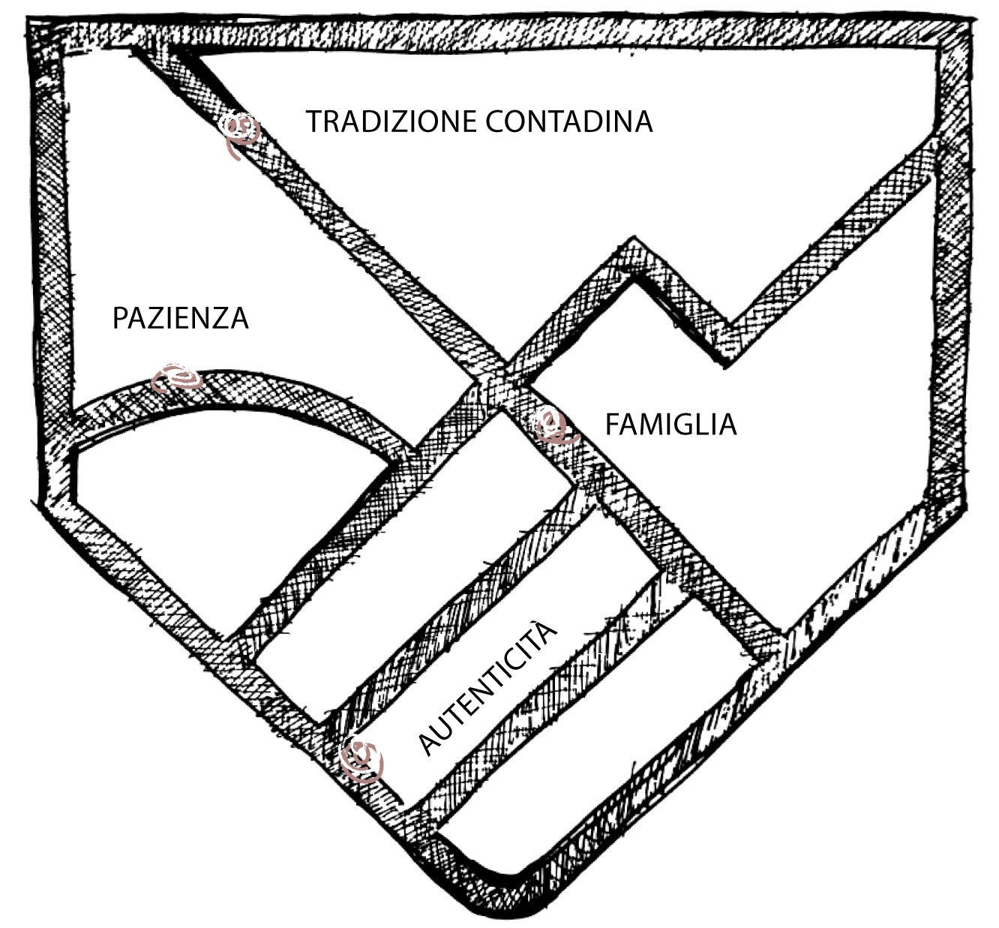
FARMING TRADITION
Every row, every bunch, every bottle is the expression of ancient knowledge and flavors that belong to our peasant heritage.
PATIENCE
We respect the rhythm of nature and patiently await its most bountiful fruits. The vineyard is our teacher, showing us the value of time and care.
FAMILY
Our wine is the essence of the Di Leone family, which for generations has passed down the indissoluble bond with the land and the constant commitment to oenological excellence.
AUTHENTICITY
Every sip of our wines tells a sincere story,
rooted in the heart of our land.
An ode to the authenticity and purity of our roots.